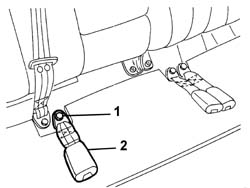

7065B14 REAR SEAT BELT ANCHORAGE ROD , (ONE), LEFT OR RIGHT - R.R.
- Path
- Procedures > 70 FITTINGS > 7065 SEAT BELTS AND ACCESSORIES > 7065B REAR SAFETY BELTS > 7065B14 REAR SEAT BELT ANCHORAGE ROD , (ONE), LEFT OR RIGHT - R.R.
- Kind
- repair procedure (removal / refitting; the operation number is the code)
- Applies to
- all engines; all production periods
- Interactive page
- https://sloeber94.github.io/elrnDB-aGt/en/#/125001990
Applies to: all engines; all production periods
 Removing
Removing
 Refitting
RefittingRaise the rear seat cushion.
1. Undo the anchorage link bolt.
2. Remove the anchorage link.

Applies to: all engines; all production periods
Refitting
RemovingCheck that the anchorage link is not damaged.
Fit the anchorage link.
Tighten the bolt to the specified torque.
 | Fastening | Component | Ø | Value (daNm) |
|---|---|---|---|---|
- | Bolt | REAR SEAT BELT BRANCH WITH ATTACHMENT BUCKLE... | M7/16'' | 4.0 |
Lower the rear seat cushion.